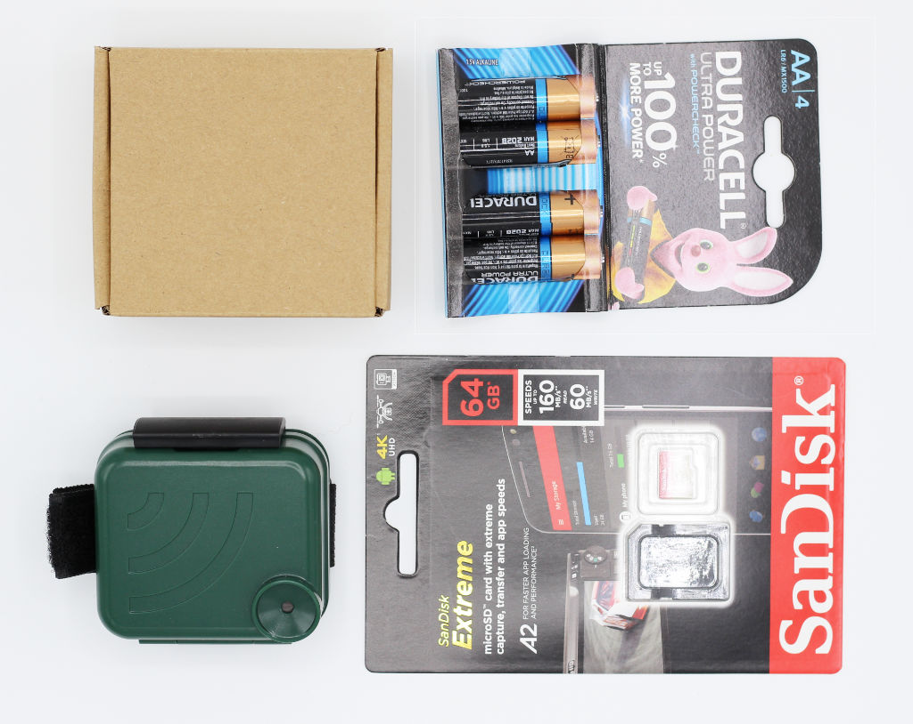
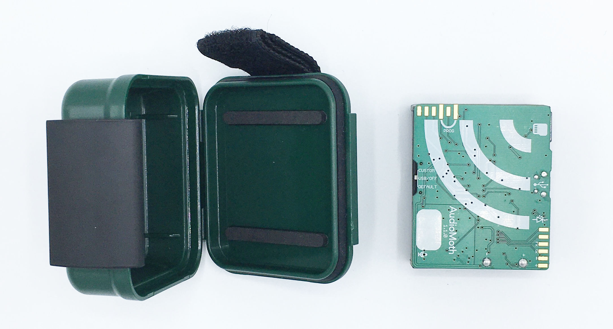
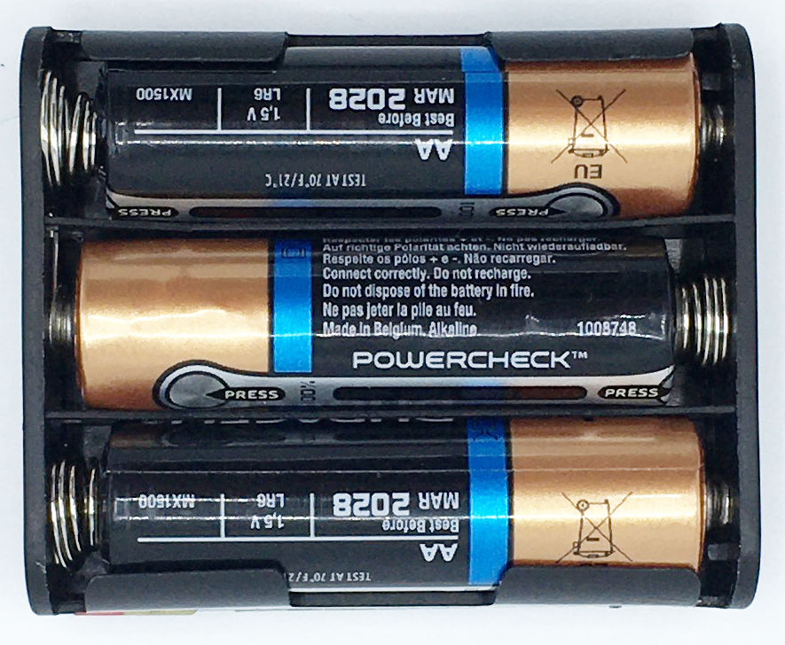
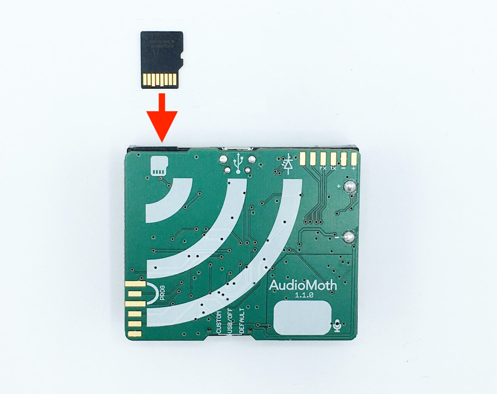
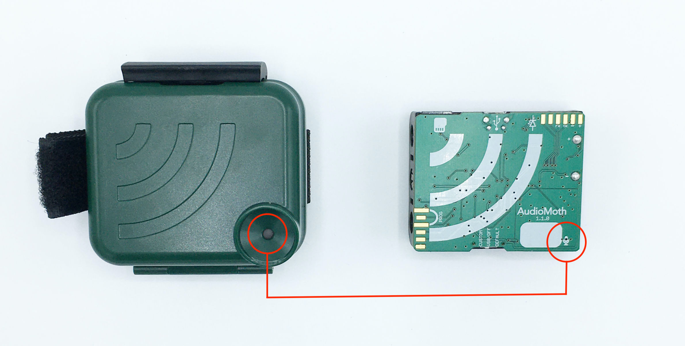

Nature Sensing
Step 1. Receive your survey kit
You will have received a survey kit containing an AudioMoth and a waterproof case inside a cardboard box, a pack of four AA batteries, a microSD memory card and a return envelope.
You will need the cardboard box and return envelope to return the AudioMoth after the survey so keep those safe.

Step 2. Identify your survey site
Move the marker on the map below to the location where you will deploy your AudioMoth.
This location will be referenced to your AudioMoth in step 3 below. It is important that you complete this stage before you continue to step 3. Try to place the marker as accurately as possible, zooming in as much as necessary to do so.
Step 3. Configure your AudioMoth
Your AudioMoth is configured using a tone played by the button labelled 'Configure AudioMoth' below. The tone tells the AudioMoth the current time and what settings it should use to make encrypted recordings. Follow the instructions below:
A. Remove the AudioMoth from its case.

B. Remove the batteries from their packaging and insert three of them into the AudioMoth.
Make sure that the orientation of each battery matches that shown on the battery holder.

C. Remove the microSD memory card from its packaging and insert it into the AudioMoth as shown below.

D. Move the switch on the side of the AudioMoth to DEFAULT.
The green light will start flashing once per second. The AudioMoth is now listening for the configuration tone from this website.

E. Click the "Setup AudioMoth" button below.
Your computer should play a short audible tune and the green light on the side of your AudioMoth will flash rapidly as it listens to it.
If the settings have been successfully received by the AudioMoth, the green light will stay on. If not, the green light will continue to flash once per second.
You may need to experiment with different distances and volume settings until the green light stays on. Typically, on a laptop, setting the volume to three-quarters of maximum volume and holding the AudioMoth about 20cm above the keyboard will work well. You can click the button as many times as you need.
F. Your AudioMoth is now ready to deploy and you can move the switch back to USB/OFF.
If you remove the batteries at any point from now on you will have to return to the previous steps to set up your AudioMoth again.
G. Replace your AudioMoth inside its case.
Make sure you line up the microphone symbol on the front of the AudioMoth with the microphone port on the front of the case.

Step 4. Carry out the survey
You can now visit the survey site and deploy the AudioMoth. You can safely transport your AudioMoth inside its case. At the survey site, temporarily remove the AudioMoth from its case, and move the switch to CUSTOM. The green light will flash slowly five times to indicate that all is well. It will then start the recording process, flashing the green light briefly once every two seconds whilst is waits to start an encrypted recording, and flashing red whilst it actually makes an encrypted recording.
If both lights are flashing together there is a problem. You may have forgotten to insert the microSD memory card or have not set up your AudioMoth as described above.
If all is well, and you have just a single green or red flashing light, return the AudioMoth to its case making sure to line up the microphone symbol on the front of the AudioMoth with the microphone port on the front of the case. Use the velcro strap to attach the case to a convenient branch or railing. Ideally, you should deploy the AudioMoth at shoulder height as close to the centre of the survey site as possible.
Step 5. Retrieve your AudioMoth
Return to the survey site after 2 weeks and retrieve your AudioMoth. You can now open the case and move the AudioMoth switch to USB/OFF to prevent any more encrypted recordings being made.
Step 6. Return your AudioMoth
You should remove the batteries (as used batteries should not be put in the post) but leave the microSD memory card in place. Place the AudioMoth and waterproof case inside the cardboard box and put this in the return envelope. The return address - FREEPOST AUDIOMOTH - is already marked on the envelope and no additional information or payment is required. Post the envelope at a post box or post office.
Questions or problems?
Please contact: Sridhar.Raman@oxfordshire.gov.uk